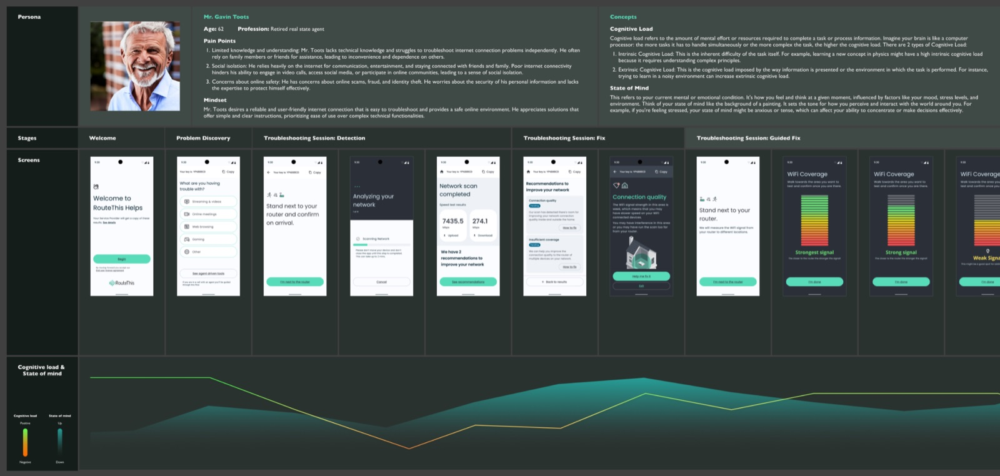
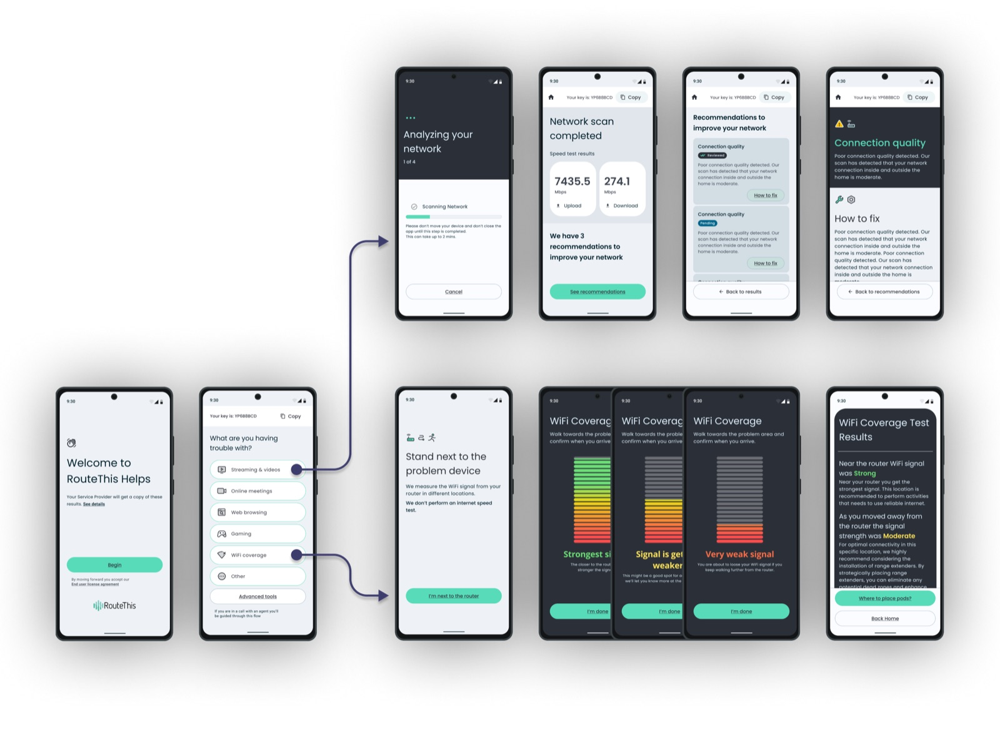
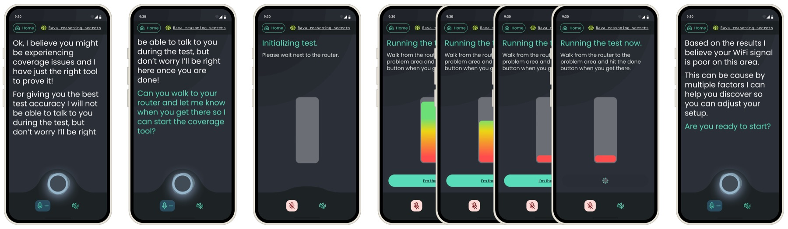
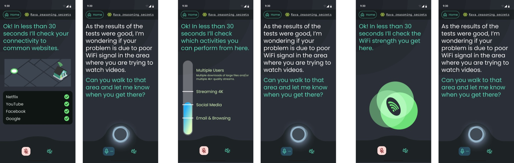

Role: Lead Product Designer
Over the past three years, I've had the privilege of guiding the transformation of Self-Help, the company's flagship app, from a static, generic-information platform into a fully AI-powered, voice-driven interface. Self-Help exists to reimagine internet troubleshooting for everyone, from tech-savvy users to those less familiar with the digital world.
01
Imagine: you can't join an online meeting, stream your favourite show, or make a critical trade because your internet is slow or unstable. Traditionally, you'd call your ISP, wait on hold, navigate multiple transfers, and repeat yourself endlessly.
Self-Help removes that friction. Users can open the app, run quick tests, and in most cases, resolve issues in under 10 minutes.
02
User interviews revealed a significant trust gap: the app presented generic, text-heavy information that felt overwhelming and unhelpful. At the same time, product decisions were largely driven by customer requests, with no Personas to guide prioritization. To better align business and user needs, I interviewed customer service agents and developed Proto-Personas that later evolved into the official product Personas.
The product was also constrained by significant technical debt and the absence of a design system, making UI updates slow and difficult. After collaborating with developers to evaluate options, we adopted Google's Material Design to establish a more consistent and scalable interface foundation.
Key Constraint
Significant technical debt and competing customer-driven priorities made implementing UX improvements slow and difficult to scale.
03
The first transformation focused on clarity, personalization, and usability. By mapping personas and their journeys, I identified key areas to improve the user experience.

04
05
Although this phase addressed trust and usability, users still preferred calling their ISP for support: a natural, conversational interaction that the app could not yet replicate... Recognizing this gap, we began exploring AI-powered and voice-driven experiences.

06
07
By this stage, the app experience had improved and users trusted it more, but it still lacked the simplicity of explaining a problem to a human. Natural language felt like the missing bridge. As AI capabilities matured, the company decided to explore a voice-driven interface, and I led the design effort. To prepare, I deepened my knowledge in conversational design and AI through research, coursework, conferences, and experimentation with emerging tools.
Before committing to voice, I needed to understand how users felt about interacting with AI. We launched a pilot version of the experience using a pick-list interface and tested it with end users from two customers over three months. Interviews revealed that users were pleasantly surprised (and even amused!) by the AI interaction, validating the concept and allowing us to move forward with voice.
Designing for voice introduced new UX challenges, particularly around latency. Because AI response times can vary, I designed multiple interface states to handle delays gracefully and maintain a smooth conversational experience.
08
The following video is one of the prototypes that displayed an early UI concept. Although it was not the final design it graciously communicates the experience we are looking for.
Touch on the screen to play it, don't forget to turn your audio on, remember this is a voice-driven interface!


09
10
The journey of Self-Help demonstrates the power of human-centred design, research-backed decisions, and iterative innovation. From restoring user trust to pioneering a voice-driven AI interface, the app has grown into a tool that empowers users and reshapes the way people interact with their internet service provider.